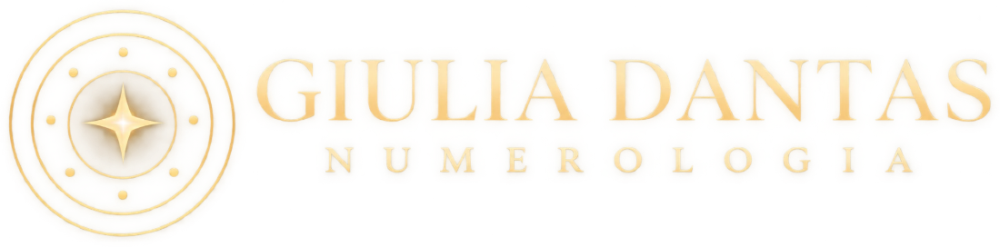

Já sou clienteTeste grátis · resultado na hora
Em qual ano da sua vida você está?
Todo mundo vive um ciclo de nove anos, e cada ano pede uma coisa: começar, construir, colher ou soltar. Com a sua data de nascimento, eu faço a conta e te mostro o seu ano, o que ele pede de você e se o seu nome carrega algum bloqueio.
Fazer o meu teste grátisGrátis · sem cartão · leva menos de um minuto
Giulia Dantas · Numeróloga
Autoconhecimento com números, em linguagem simples.
Passo 1 de 2
Faça a conta do seu ano
Preencha os dados abaixo. O resultado aparece na hora, aqui mesmo, assim que você tocar no botão.
A roda dos 9 anos
Cada fase da vida tem a sua estação
A sua data de nascimento coloca você num ciclo de 9 anos, e cada ano traz um tema: iniciar, construir, colher, soltar. Quem ignora a estação em que está costuma sentir o peso no dinheiro, no amor e no trabalho, sem entender de onde veio.
Como funciona
Do teste grátis à consulta completa
Faça o teste
Com o nome e a data de nascimento, o sistema faz a conta do seu Ano Pessoal e do seu mês, e mostra quantos bloqueios o seu nome forma.
Veja o que o seu ano pede
Você lê o resultado na hora e confere com o que está vivendo. É o que costuma fazer a pessoa dizer: “era isso mesmo”.
Receba a consulta completa
Se quiser ir além, a consulta completa abre os capítulos fechados e fica na sua área, no celular, para reler quando quiser.
Grátis ou completa
O que você recebe em cada uma
Teste grátis
Para conhecer o seu ano
- O seu Ano Pessoal e a conta, passo a passo
- O que o seu ano significa, em poucas linhas
- O seu mês atual e o que ele pede
- Quantos bloqueios o seu nome forma
Consulta completa
O seu mapa numerológico inteiro
- O seu ano completo, com a armadilha que pega quase todo mundo
- O ano seguinte, mês a mês
- Como contornar cada bloqueio do seu nome
- Qual nome usar para assinar e se apresentar
- Destino, coração e expressão, com a conta de cada um
- Amor, dinheiro e casa nos seus números
Sem mistério
Como a conta é feita
Nada de caixa-preta. A conta usa a sua data e as letras do seu nome, aparece passo a passo na tela, e você mesmo pode conferir cada soma.
A data mostra o ano
Dia + mês de nascimento + o ano do seu último aniversário, somados até sobrar um dígito. Esse é o seu Ano Pessoal, e ele muda no dia do seu aniversário.
O nome vira números
Cada letra vale um número de 1 a 8, pela tabela da numerologia cabalística (abaixo). Acentos e o ç têm valores próprios.
O triângulo mostra bloqueios
Somando as letras vizinhas, forma-se um triângulo. Se o mesmo número aparece três vezes seguidas, isso é um bloqueio.
Quem já fez
O que as pessoas dizem
Antes de começar
Perguntas frequentes
A numerologia combina com a minha religião?
Aqui ela entra como ferramenta de autoconhecimento e reflexão: não faz previsão e não toma o lugar da sua fé. Muita gente usa o ciclo do ano como um calendário de decisões, do mesmo jeito que se olha a estação antes de plantar. Se algum ponto não combinar com a sua crença, é só deixar de lado.
Preciso crer na numerologia para ler o meu resultado?
Não. Leia como um espelho: veja o que bate com o que você vive e o que não bate. O que fizer sentido, você aproveita. O resto, descarta.
O que eu vejo no teste gratuito?
O resultado aparece na tela na hora. Ele traz o seu Ano Pessoal com a conta feita na sua frente, o que o ano pede, o clima do mês em que você está e quantos bloqueios o seu nome forma. Os capítulos que dizem como agir, o calendário dos meses e a forma de contornar os bloqueios ficam na consulta completa.
Para que serve o meu nome completo?
O nome de nascimento forma o triângulo que mostra se existem bloqueios, isto é, o mesmo número repetido três vezes seguidas. Quanto mais fiel à certidão, mais fiel o resultado.
O que acontece com o meu e-mail e o meu WhatsApp?
Eles servem para a Giulia Dantas falar com você sobre o seu resultado e a consulta completa, e para liberar o seu acesso depois da compra. Se quiser que os seus dados sejam apagados, é só avisar pelo mesmo contato.
Dá para fazer a conta de um familiar ou amigo?
Dá, e muita gente faz para presentear. Use o nome completo e a data de nascimento da pessoa. O e-mail e o WhatsApp continuam sendo os seus, e é para você que o contato e o acesso vão.
Como e quando chega a consulta completa?
Assim que o pagamento é confirmado, o link de acesso ao seu mapa chega no seu e-mail. Você entra com o mesmo e-mail que usou aqui e vê apenas o seu resultado.
Consigo guardar o resultado em PDF ou no celular?
Consegue. A consulta completa fica na sua área, e dali você pode imprimir, salvar em PDF e instalar como aplicativo no celular para reler quando quiser.
Quem está por trás da leitura?
A conta segue a numerologia cabalística, e cada passo aparece na tela para você conferir (veja “Como a conta é feita”). A leitura é assinada por Giulia Dantas, numeróloga.